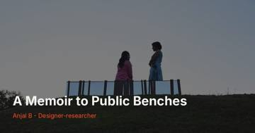
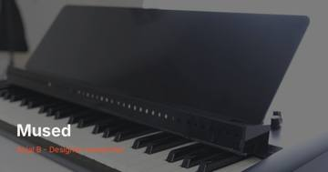
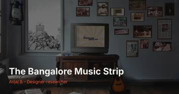
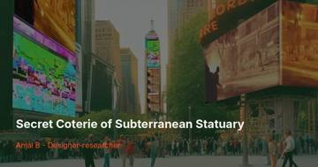
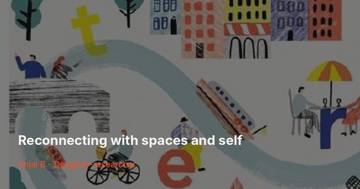
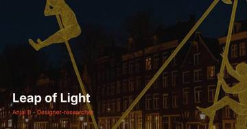
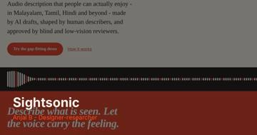
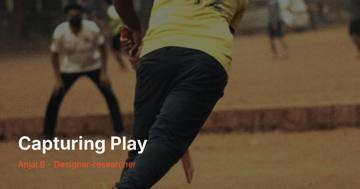

Designer-researcher and Assistant Professor in Trivandrum. Trained in architecture and new media design, I work across installation, interactive media, sound and research.

02MusedProduct design · Music · Edutech
03What remains when the song fades?Experience design · Staging · Documentation · Storytelling · Research · UX
04Secret Coterie of Subterranean StatuarySpeculative and Conceptual design · Architecture · Storytelling
05Reconnecting with spaces and selfResearch · Documentation · Problem solving
06Leap of LightExperience design · Staging · Conceptual design · Sculpture
07SightsonicProduct design · Problem solving · UX · Research
08Capturing PlayPhotography · Documentation · Storytelling
I am an Assistant Professor at the Department of Design, DC School of Architecture and Design, Trivandrum, where I teach and design courses on technology, art history and film. I trained in architecture (B.Arch, College of Engineering Trivandrum) and then in New Media Design (M.Des, NID Gandhinagar).
Experimental storytelling is what I focus on. My work moves between installation, interactive media, oral history, sound and research. It has been shown at the Florence Biennale, shortlisted for the Amsterdam Light Festival, and made at Science Gallery Bangalore and the Sensistan residency.
The full story, in one page.